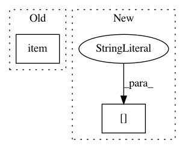

b6f15a940f89683d947e461161d01f9b645d7553,qucumber/observables/observable.py,ObservableBase,statistics,#ObservableBase#,123
Before Change
samples = self.apply(nn_state, chains).data
current_mean = samples.mean().item()
current_variance = samples.var().item()
running_mean, running_variance, running_length = update_statistics(
running_mean,
running_variance,
After Change
running_variance,
running_length,
sample_stats["mean"],
sample_stats["variance"],
num_chains,
)
In pattern: SUPERPATTERN
Frequency: 3
Non-data size: 2
Instances
Project Name: PIQuIL/QuCumber
Commit Name: b6f15a940f89683d947e461161d01f9b645d7553
Time: 2019-04-20
Author: emerali@users.noreply.github.com
File Name: qucumber/observables/observable.py
Class Name: ObservableBase
Method Name: statistics
Project Name: havakv/pycox
Commit Name: d01864a6b840a6ca5da581c5e5fe90b74da8d2b8
Time: 2018-05-05
Author: havard@DN0a22c81b.SUNet
File Name: pycox/callbacks.py
Class Name: MonitorCoxLoss
Method Name: _run_dataloader
Project Name: Scitator/catalyst
Commit Name: f4beaac559e00a3676d942dc7e8fea69efc01cfe
Time: 2020-11-30
Author: raveforlive@gmail.com
File Name: catalyst/metrics/avg_precision.py
Class Name:
Method Name: mean_avg_precision